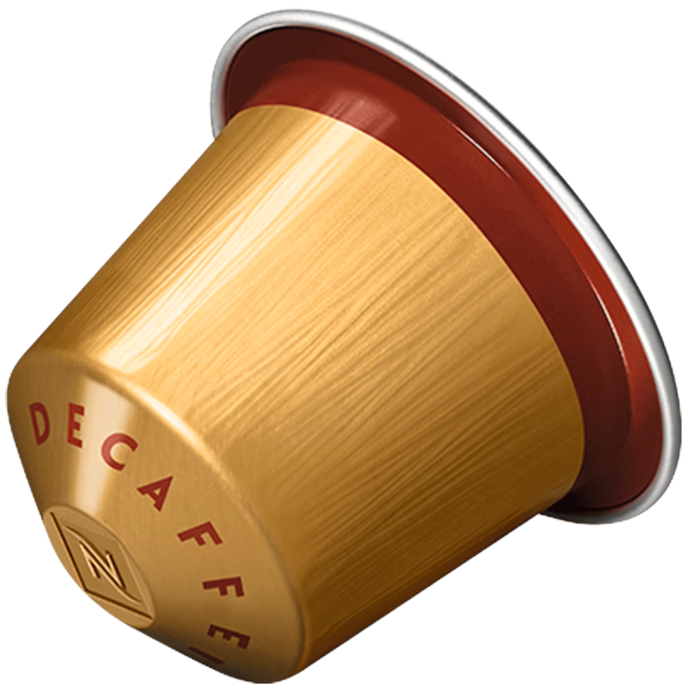
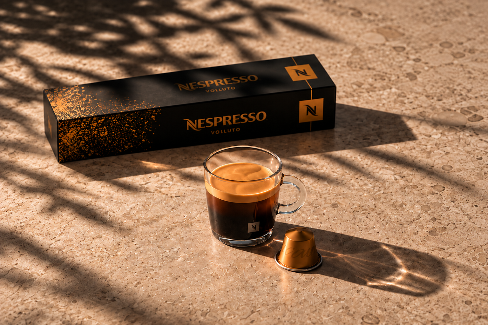

Hvad er Volluto Decaffeinato?
Volluto Decaffeinato er en koffeinfri kaffekapsel til Nespresso Original-maskiner. Den har intensitet 4 ud af 12 og brygges som en espresso på 40 ml.
Koffeinfri espresso
En mild og balanceret espresso med søde kiksnoter, let frugtighed og en afrundet karakter. Et roligt valg, når du ønsker en god kop kaffe uden koffein.
Her på siden kan Nespresso-brugere, der foretrækker en mild og koffeinfri espresso, hurtigt finde produktets vigtigste egenskaber, smagsprofil og bryggevejledning.
Udforsk smagsprofilen
Kort fortalt
Intensitet
4/12
Anbefalet kopstørrelse
Espresso, 40 ml
Variant
Koffeinfri kaffe
Oprindelse
Arabica fra Brasilien og Colombia

Smagens udtryk
Volluto Decaffeinato har en mild profil, hvor søde kiksnoter møder en let frugtighed. Den afrundede karakter gør kaffen enkel at nyde, både sort og med en lille smule mælk.
Kort og præcist
Volluto Decaffeinato er en koffeinfri kaffekapsel til Nespresso Original-maskiner. Den har intensitet 4 ud af 12 og brygges som en espresso på 40 ml.
Kaffen har en mild og afrundet smagsprofil med søde kiksnoter, let frugtighed og en mild kornkarakter.
Kapslen er beregnet til en Nespresso Original-maskine og anbefales brygget som Espresso, 40 ml.
Den passer til personer, der foretrækker en mild og balanceret espresso eller ønsker et koffeinfrit alternativ.
Gå på opdagelse